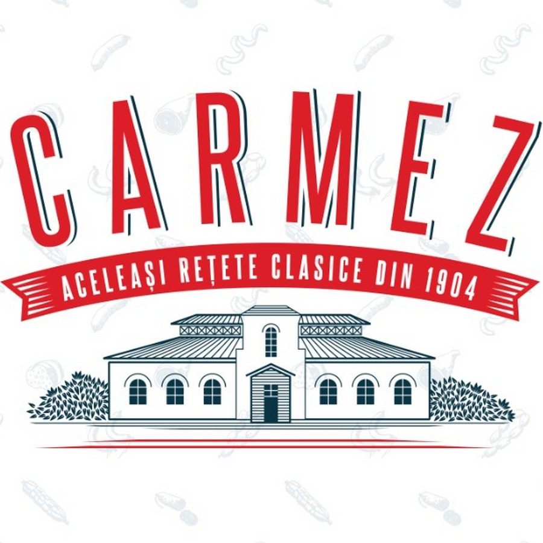
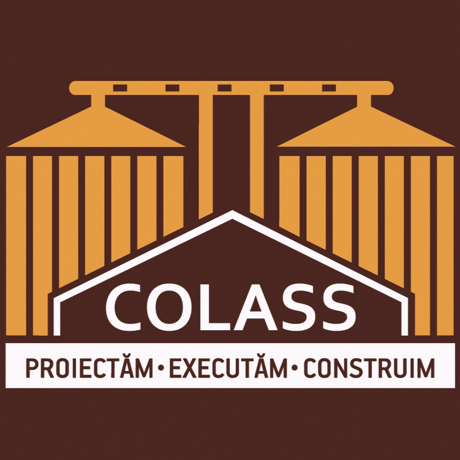
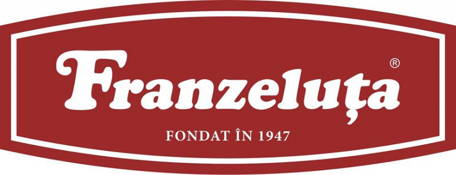
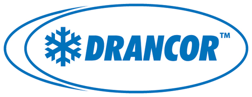
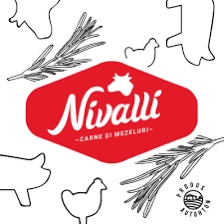
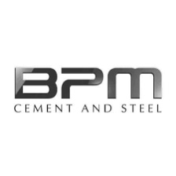
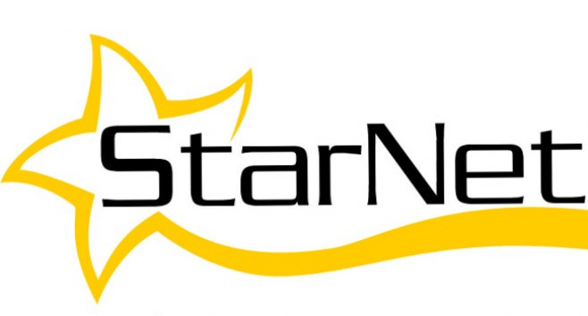

О нас
ARTEZIANA.md является логическим развитием компании SRL “Vaciano Grup”, основанной отцом и его 2-мя сыновьями для ведения деятельности, которой они посвятили всю свою жизнь, а именно Бурением артезианских скважин на воду. 45 лет накопленных знаний и опыта, сконцентрированы в- ARTEZIANA.md
Бурение артезианских скважин
В данной сфере мы без преувеличения являемся лидерами, с наиболее
гибкой системой расчёта стоимости и подбора материалов. Скважины делятся
на 2 типа: промышленные и бытовые. Также могут иметь различную конструкцию
в зависимости от пород водонесущих горизонтов из которых планируется
добывать воду, а именно: С гравийным фильтром и без него.
1 тип - промышленные скважины
для обеспечения крупных предприятий и объектов агропромышленного комплекса,
с дебитом воды от 100 до 1000 тонн в сутки.
2 тип - это скважины для малых предприятий и частных пользователей с дебитом
воды до 100 тонн в сутки.
О конструкциях скважин вы можете узнать из наших соц сетей или при
консультации.🤝
Обустройство скважин
После того как скважина пробурена, возникает закономерный вопрос: «А что с ней дальше делать?»
В зависимости от целей и задач, выполняются следующие работы:
1- строительство кессонного колодца;
2- монтаж насосного оборудования;
3- проведение коммуникации;
4- установка систем автоматизации;
5- строительство и монтаж накопительных резервуаров;
6- установка и подключение дополнительных насосных станций и их систем автоматизации.
Ремонт скважин
Скважина на воду, будучи сложным техническим сооружением,
иногда требует технического вмешательства.
Наиболее частые работы производимые при ремонте:
1- Замена насосного оборудования;
2- Механическая чистка заброшенных и законсервированных скважин;
3- Химическая чистка и профилактика скважин, путём обработки кислотами и щёлочами;
4- Восстановление притоков путём воздействия гидравлического или пневматического снаряда;
5- Устранение разгерметизации сгнившей обсадной колонны, путём установки новой обсадной колонны внутрь старой, с последующей цементацией затрубного пространства;
Наши клиенты






